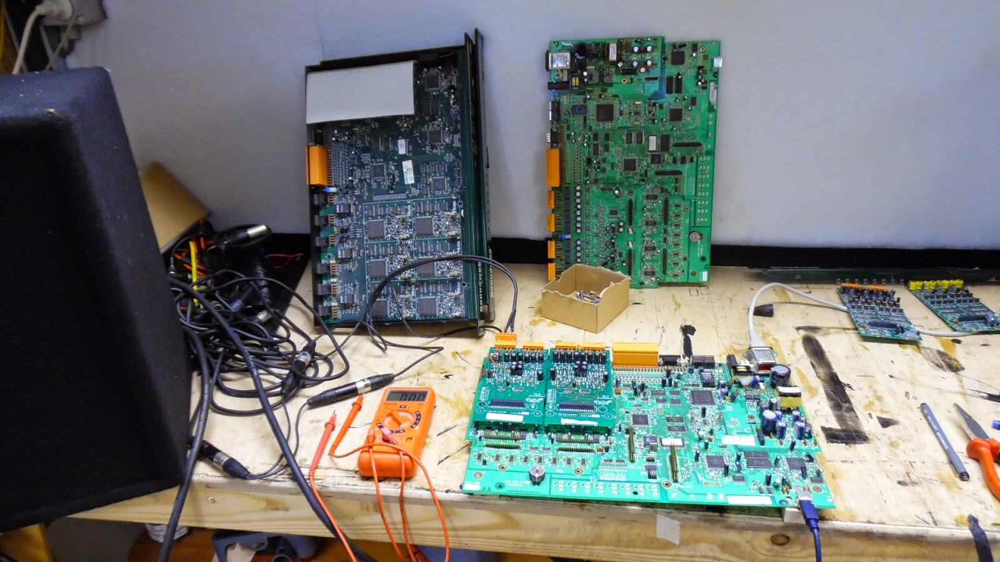
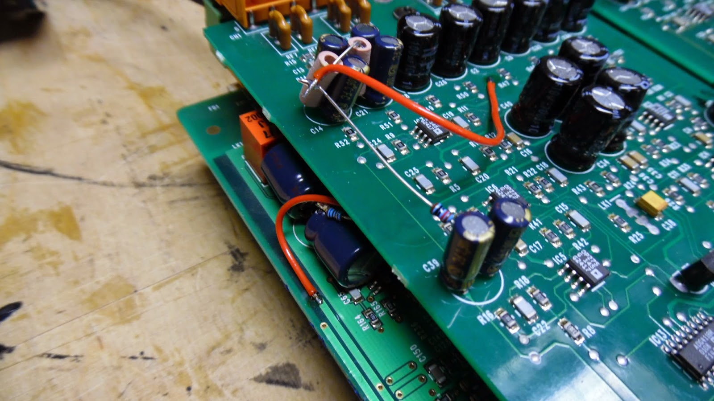

On the bench is a stack of green Soundweb 9088 and 9088ii units, some of them dead. They are old, but they can do FIR — which is why they are still worth repairing.
We are still using quite a lot of old green Soundweb 9088 and 9088ii units in our sound projects. The main reason is that these ancient machines were already capable of some FIR filtering. Mind you: there is a bug in the software that makes you have to reverse the filter kernels. Presumably nobody ever noticed, using linear-phase filters (symmetrical as these will be). ;)

Anyway, I had some broken ones lying around, so I thought it was time to do some repairing. One of the apparent vulnerabilities is the power-supply cap marked C216. After replacing those I was able to get some of them back to life. For all of you out there plagued by the dreaded searching... (ad infinitum) mode, I will repeat some rules:
- Replace the C216 cap; while you are at it, it may be a good idea to upgrade C265 with something beefier as well.
- Use the spare jumper at the option A position to set the machine in debug mode.
- Switch on power; you should now get the "nightrider" row of flashing LEDs.
- Use the backup loader.exe to reload the firmware. Make sure you have the correct *.a21 file. I learned the hard way not to make a mistake!
- When done, switch off power, replace the jumper and reboot.
As always, use the correct COM port settings and bitrate (38400 front, 115200 back). The FTDI driver/USB-to-RS232 works fine on Windows XP (and 7), but on Windows 8 it appears to be troublesome.
"Audiophile" mods
Now for the fun — and utterly time-consuming and by no means commercially viable — part. Let's see if we can do some "audiophile" modifications. In the issue 1 model (9088) there are some VCA ICs built in to facilitate volume control directly after the DACs. These suck. ;) I forgot the type number, but in an earlier experiment some years ago I removed them and shortened the signal path. So no more volume control on the output, and maybe, with high-gain power amps, a bit of excessive noise. But hey, who cares about noise? It's the universe coming through our speakers. Big plus!
Next thing I thought would be worthwhile is replacing all these non-polar caps in the signal path. Well, this wasn't going to happen: all my regular dope dealers like Farnell and RS seemed to have stopped selling them. Hmm, bummer. Now what if we replaced them with regular caps back-to-back with a DC bias? This is an idea I actually stole from a very old Midas PRO4 console I once owned.


Big improvement? Argh, euh, yes: with all my skills I can notice the difference (some more clarity), but I am not even sure if this is desirable. So, nah, not going to do that on all our machines...


...edit...edit...edit... Not completely convinced by the disappointing results of the above modification, I decided to give it a second try. Same mod, but this time I tested a stereo A/B comparison. Wow. This is some serious shit: a much broader and deeper image and a very convincing musical impact. Now why the hell is this???